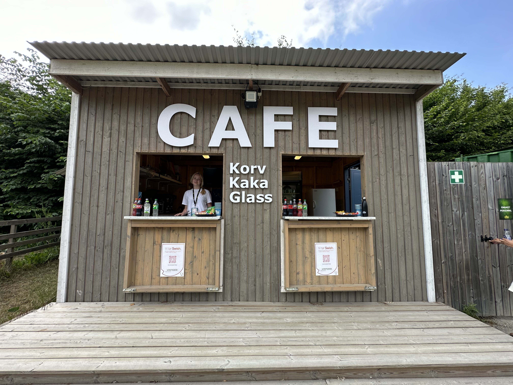
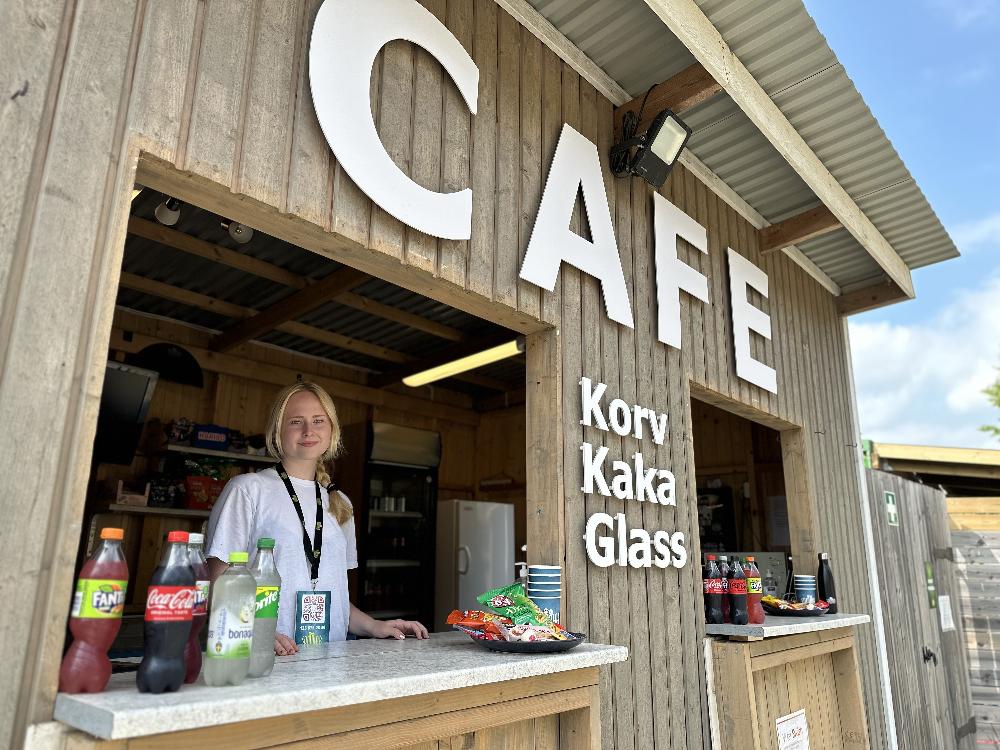

Sommarteatern är en utomhusscen med amfiteaterläktare i Öja utanför Ystad. Vi jobbar kontinuerligt för att göra upplevelsen tillgänglig för alla — oavsett rörlighet, hörsel eller andra behov.
Förbered ditt besök
Parkering & ankomst
Du parkerar gratis direkt på området vid Karlshemsvägen 51, Öja. Från parkeringen är det en kort, plan promenad till entrén. Skyltning finns på plats.
Grindarna öppnar 60 minuter innan
Visa din biljett (QR-kod på telefonen eller utskriven) vid grinden — sedan är du inne! Området öppnar 60 minuter före föreställningen, samtidigt som kiosken. Promenera runt i lugn och ro och utforska platsen.
Dörrarna till läktaren öppnar 15 min innan
15 minuter innan föreställningen börjar öppnas dörrarna till läktaren. Biljettvärdarna finns på plats och guidar dig till din numrerade plats.
Läktaren — din plats på amfiteatern
Amfiteaterläktaren har 268 numrerade platser med ryggstöd. Alla platser har god sikt mot scenen. Det är öppet och luftigt — du ser alltid precis vad som händer på scenen.
Föreställningen: akt 1, paus & akt 2
Akt 1 varar 70 minuter, följt av en 20 minuters paus — då kiosken öppnar igen. Akt 2 varar 60 minuter. Kiosken håller även öppet en stund efter att föreställningen är slut.
Ljud, ljus & atmosfär
Föreställningen är förstärkt med mikrofoner och högtalare — du hör tydligt från alla platser. Ljussättningen är teatral med spotlights. Det förekommer sång, musik och applåder.
Snabbfakta om scenen
Tillgänglighetsinformation
Rullstolsplatser
Rullstolsanpassade platser finns vid läktaren. Dessa behöver bokas i förväg — kontakta oss på info@sommarteaternystad.com så hjälper vi dig att välja bästa plats.
Har du svårt att ta dig upp för trappor rekommenderar vi platser närmast scenen.
Nedsatt hörsel & hörslinga
Alla repliker och sång förstärks via mikrofoner och högtalare. Hörslinga finns från och med sommaren 2024 — kontakta oss i förväg så berättar vi var du sitter bäst för att dra nytta av hörslingan.
Teckenspråksgestaltad föreställning
Sommarteatern erbjuder något unikt — en teckenspråksgestaltad föreställning där tolkarna befinner sig på scenen, nära skådespelarna och som en del av berättelsen. Det är inte en tolk vid sidan av scenen, utan en gestaltning där teckenspråket är fullt integrerat i föreställningen. Kolla aktuell spelplan på Oliver Twist-sidan för datum.
Ledsagare
Ledsagare går alltid gratis. Boka via info@sommarteaternystad.com. Ange vilken föreställning det gäller och eventuella behov, så ser vi till att ni får lämpliga platser.
Parkering & hitta hit
Gratis parkering finns på området. Adressen är Karlshemsvägen 51, Öja, bredvid Åbergs Handelsträdgård.
Med kollektivtrafik: Skåneexpressen 4 stannar vid hållplatsen Ystad Öja, sedan en kort promenad till scenen.
Toaletter
Det finns sex toaletter på området, varav en rullstolsanpassad. Toaletterna är placerade nära entrén och publikområdet.
Utomhusscen — utan tak
Sommarteatern spelar i alla väder. Läktaren och scenen saknar tak, så klä dig efter vädret! Vid regn kan du låna regnkappa hos oss. Paraplyer är inte tillåtna av hänsyn till bakomvarandes sikt.
Vid kraftig åska avbryts föreställningen och återupptas när åskan passerat — vi har kontinuerlig kontakt med vädersatelliter. Om en föreställning mot förmodan ställs in kontaktas alla biljettinnehavare och biljetter ombokas.
Kiosk & mat
Vår kiosk öppnar 60 minuter innan föreställningen börjar — samtidigt som grindarna öppnas. Vi håller även öppet under pausen och en stund efter föreställningen. Du hittar ett varierat utbud av mat och dryck, och vi tar självklart hänsyn till olika kostbehov.


Har du frågor om tillgänglighet?
Kontakta oss gärna i förväg om du har specifika behov. Vi hjälper dig att planera ditt besök så att det blir så smidigt och trevligt som möjligt.
Skicka mail till oss